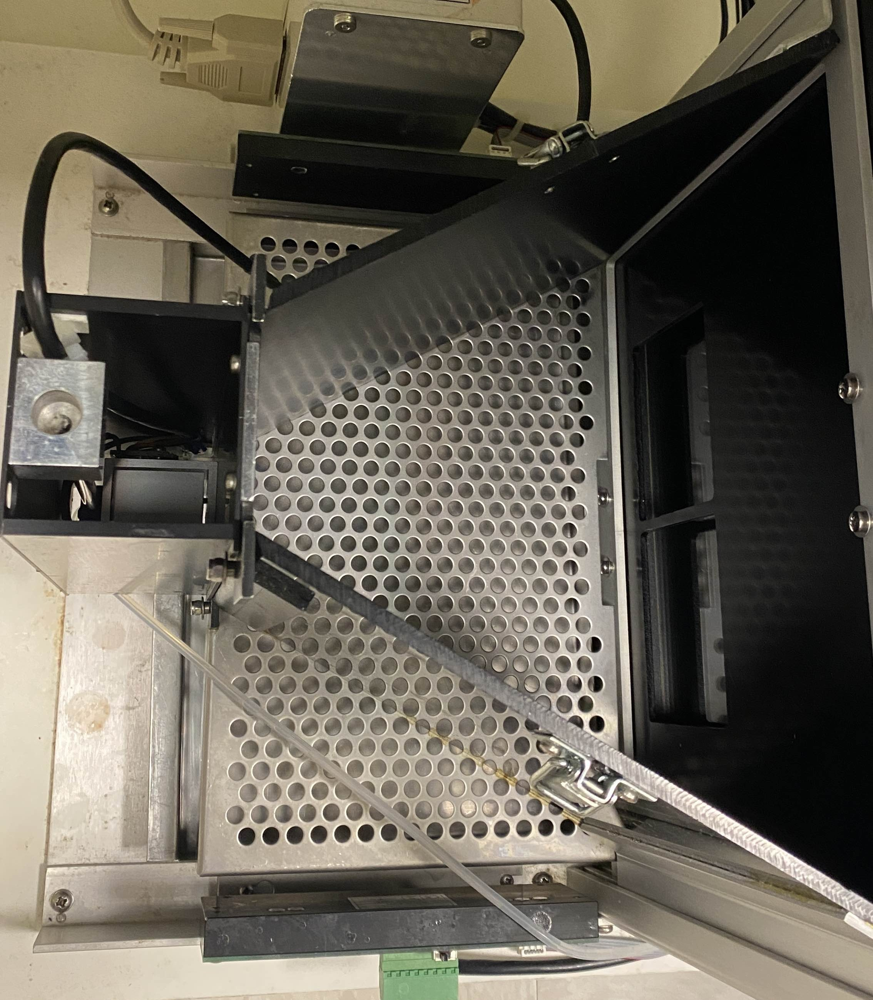
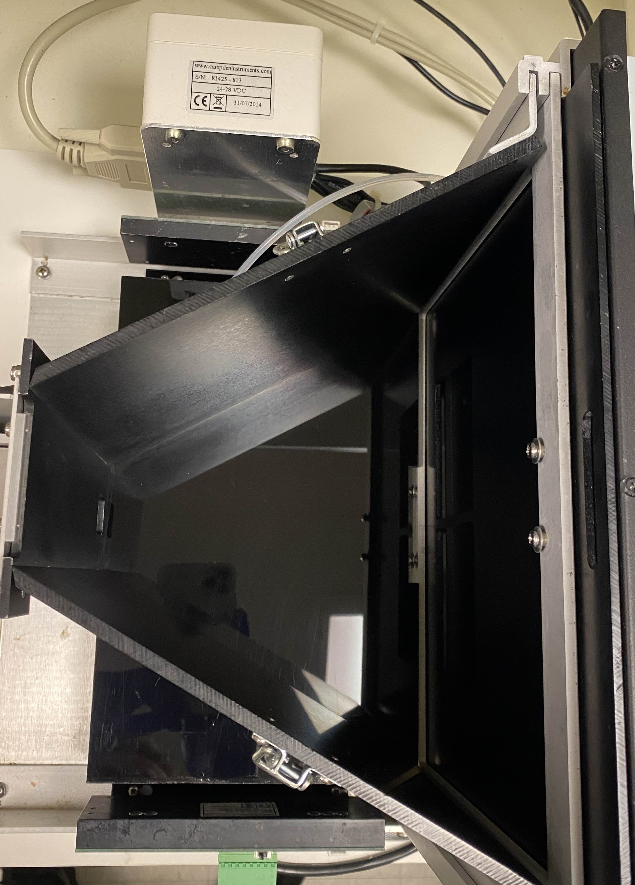
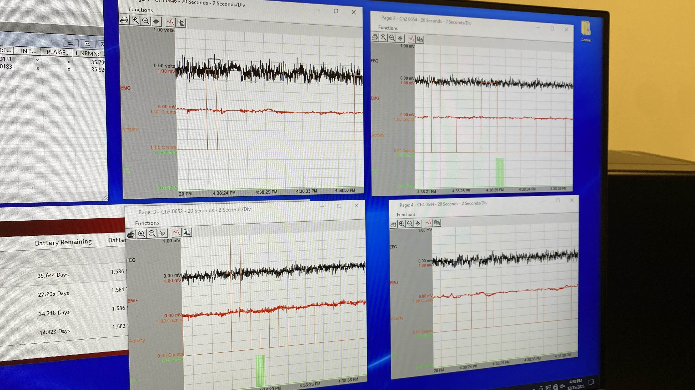
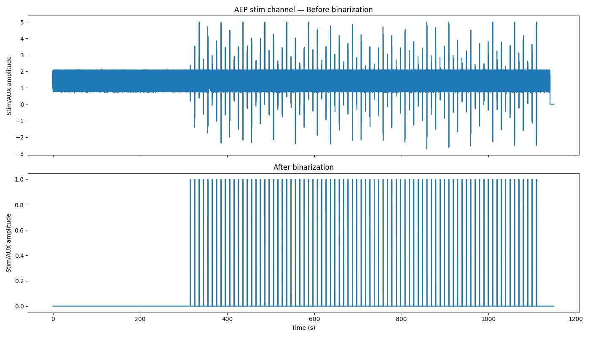
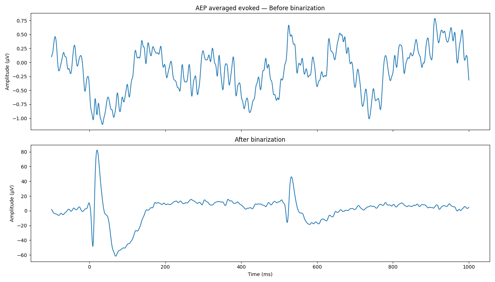
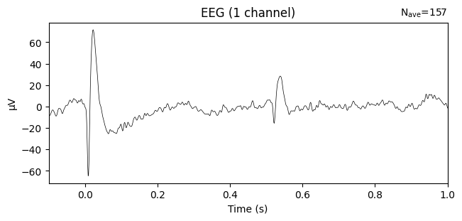
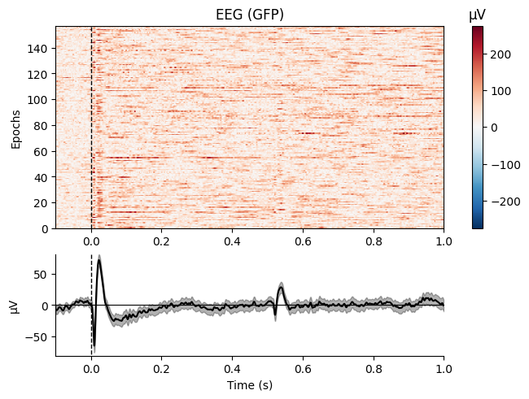
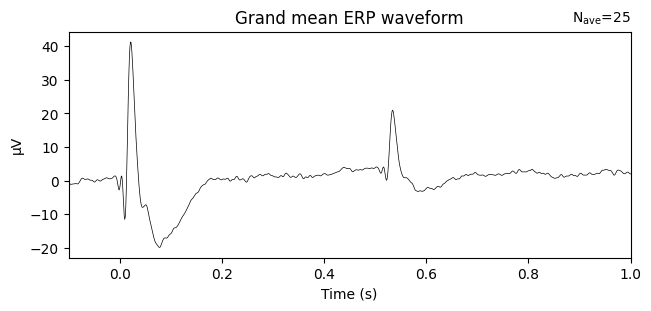

Projects
DIY EEG & Brain-Computer Interface
Homemade RC-circuit EEG passion project with a 4-stage Python BCI pipeline spanning from analog signal acquisition through real-time motor imagery decoding built for under $100.
Behavioral Coupling of EEG & Touchscreen Operant Task
Prototyped non-shielding acrylic platforms and TTL integration to pair wireless EEG telemetry with Bussey-Saksida touchscreen chambers.
Event-Related Potentials Analysis Pipeline
Robust Python pipeline for extracting AEPs and VEPs from rodent EEG recordings
Homemade EEG and BCI
I am building a real-time brain-computer interface to detect motor imagery (imagined muscle clenching) from self-recorded EEG data to translate my EEG signals into keyboard commands in real time.
Background & Motivation
Hobbyist BCI toolkits can be costly, so I opted to build my own EEG recording RC device for its lower entry cost and educational opportunity to hone circuit theory fundamentals.
Technical Implementation
I utilized the medical grade instrumentation amplifier AD620 with electrodes computing the difference between them, amplified by a controllable gain multiplier. The signal passes through a 60Hz notch filter, 7Hz HPF, 31Hz LPF, 1Hz HPF, gain stage, and a second 60Hz notch via TL0884CN op-amps. I built a 1-channel EEG cap with 2 electrodes (1 mastoid reference, 1 active site) using hot glue, electric tape, and a ski mask.
Four Python modules form the BCI pipeline: real-time circular-buffer visualization, a PsychoPy task presenting pseudo-randomized "CLENCH" vs "REST" cues with synchronized 3-second EEG recordings (80 trials/session), preprocessing that downsamples from 48kHz to 250Hz with 8–30Hz bandpass, and a Stratified k-fold (k=5) logistic regression classifier from scikit-learn.


Results & Performance
Initial confusion matrices showed the logistic regression model identified true pos./neg. cases more often than erroneous false pos./neg. (F1 = .512). The live-decoder successfully outputs keyboard input "a" on imagined left fist clenching, though cross-transfer capabilities across varied environmental/brain states need improvement.
To Do
Main next steps: more training data, additional AD620s for more electrodes, migrating from breadboard to protoboard, and incorporating SVM for more robust classification.
EEG-Touchscreen Operant Coupling
Overcoming historical hurdles for implementing wireless EEG behavioral assays in a touchscreen learning task. I prototyped non-shielding platforms, identified ideal wiring layouts, and established directions for near-future experimental plans.
Problem Items
- Shielding: Metal ABET II chambers blocked wireless EEG signal transmission entirely.
- Digital IO: Required additional PCI card configuration for real-time digital output.
- Wiring: Routing digital output lines from PCI card to DSI EEG system.
Solutions
- Shielding: Replaced metal platforms with CNC-machined acrylic parts I designed in SolidWorks. Assembled with Acrylic Weld On solvent bonding.




- Digital IO: Stereotyped TTL pulses per behavioral event — 2 pulses for correct, 3 for incorrect, 5 for reward collection.

- Wiring: Stripped BNC coaxial wire and routed signal/ground to breakbox channel. My DIY BCI experience provided the critical insights.


Next Steps
Currently in the process of conducting a touchscreen EEG cohort to identify event-related EEG waveform potentials with respect to behavioral metrics, allowing us to observe waveform evolution as animals learn the task.
Event-Related Potentials Analysis Pipeline
A Python pipeline for extracting event-related potentials (auditory and visual evoked potentials) from rodent EEG telemetry recordings. Robust and capable of analyzing historically noisy and current analog stim channels into clean event timestamps to epoch around those events. The pipeline is evolving and currently contributing to multiple manuscripts currently in preparation at the lab.
The Problem
Our DSI PhysioTel telemetry system records an analog stim channel alongside the EEG, and the channel carries square wave signals marking when a stimulus was presented to the animal. In a clean recording this is fine: MNE's find_events picks up the rising edges and you have your event timestamps. Historically, the BNC-aux cable essental in our set up for pairing the tools faced a poor adapter for grounding the signal, producing AEP datasets with much noise contamination in the stim channel signal, resulting in find_events to miss real stims and pick up false events during the duration of the study.
How It Works
The pipeline does a two-pass detection on the stim channel. The first pass runs find_events with min_duration=0.002 to filter out the TTL starting ripple while keeping all real trials and excluding the noisy half-signals from the analog signal. Then, for prior lab data with noisy AEP stimulus channels, an amplitude-thresholded binarization rewrites the stim channel as clean square pulses (1 above threshold, 0 elsewhere) which gets injected directly back into the MNE raw object via raw._data[stim_idx]. A second find_events pass on the binarized channel produces the final event list.
A USE_BINARIZE flag lets you skip the rewrite for clean recordings where the raw analog channel is already usable and as a debug comparator/validation that the binarized stage doesn't influence the final data analysis.


Auditability
For every file, the pipeline writes:- The total event count before and after binarization, so you can immediately see whether binarization changed the detected events
- The exact sample timestamps, event IDs, and stim channel values at the first few events in each pass, so you can spot-check whether the pulses look right
- How many events were dropped during
mne.Epochs()construction (these are events too close to the recording boundaries to fit a full epoch window) - How many epochs were dropped by the amplitude rejection threshold (currently 500 µV, which catches movement artifacts and electrode pops)


What This Gets You
Once the pipeline is run across a cohort, the outputs come together into an analyzable grand-mean evoked waveforms across animals, and direct comparisons between genotypes or experimental groups.

What's Next
The current state is a working script that processes a folder of EDFs and produces all outputs in one go. The next step is finalizing the GUI implementation for the rest of the lab.
I'm also planning to extend the epoching window logic to support the touchscreen EEG project, as the data management process is highly conserved between the two experiments, and only requires generalizing the event-id logic.
About
Welcome! I'm Sean, a junior specialist in neuroscience with a passion for understanding the brain and identifying behavior-associated biomarkers in EEG.
After acquiring my Associates degree in Natural Science at 18 in high school, I continued my education at UC Davis where I earned my B.S. at 20 in Neurobiology, Physiology, and Behavior. Now, at Dr. Jill Silverman's lab at UC Davis Health, my work investigates mouse models of neurodevelopmental disorders and characterizes electrophysiological trends in EEG with respect to measurable behavior metrics. I'm heavily involved in experimental design, behavioral experiments, craniotomy and brain surgery procedures, in vivo/in vitro neurophysiology classification, data processing, and manuscript preparation — though I'm mostly known by my lab coworkers as the "computer wizard guy".
I'm also working on a personal project where I'm self-collecting my own EEG dataset from an RC circuit device I built from scratch for developing a DIY brain-computer interface.
Outside of work, it's easiest to find me at the mountains hiking/rock climbing, or at the beach. Unless I'm tired, in which case I'm usually at my computer.


Publications
The following publications were drafted by my PI, Dr. Jill Silverman, and myself regarding projects I've been involved in at the lab. Many are in their mid to late stages of completion.